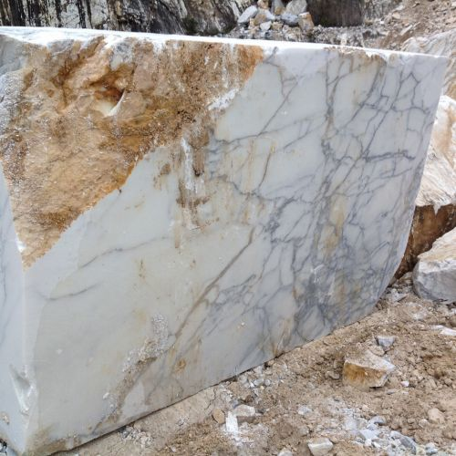

Questo sito presenta una selezione unica di mini‑sculture in marmo, ognuna numerata, documentata e curata personalmente. Il mio lavoro unisce archivio, fotografia, storia materiale e un approccio curatoriale internazionale.
This website showcases a unique selection of marble mini‑sculptures, each one numbered, documented, and personally curated. My work combines archival method, photography, material history, and an international curatorial approach.
